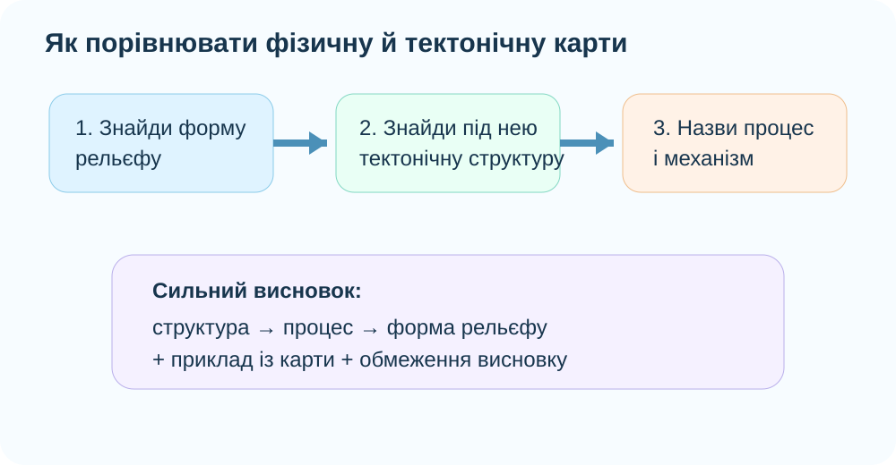
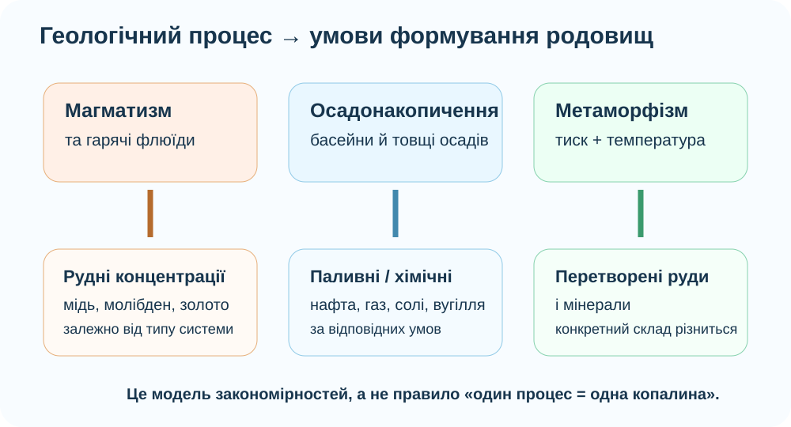

1. Гіпотеза до пояснення
Оберіть твердження, яке найкраще можна перевірити за двома картами — фізичною й тектонічною.
2. Реальний рельєф Землі: що видно без підписів?

NASA Goddard Scientific Visualization Studio: глобальна топографія й батиметрія.
Анди, Гімалаї, Східно-Африканський рифт, Серединно-Атлантичний хребет.
Чи утворюють великі гірські системи випадкову мозаїку?
Які ділянки рельєфу можуть бути пов’язані з активними межами плит?
3. Зіставте дві карти

USGS: межі літосферних плит.

Назвіть тип межі плит і поясніть, чому вздовж неї сформувалися високі гори.
Чому рифт — доказ розтягнення літосфери, а не її стискання?
Чому великий хребет може лежати не на материку, а на дні океану?
4. Інтерактив «Структура → рельєф»
5. Корисні копалини: чому карта родовищ теж має закономірності?

Можуть концентрувати руди міді, молібдену, золота та інших металів поблизу магматичних поясів.
У них накопичуються потужні товщі осадів; з такими басейнами часто пов’язані нафта, газ, солі, частина вугілля.
Можуть містити рудні родовища, пов’язані з давніми магматичними й метаморфічними процесами.
Важливо: це не формула «одна структура = одна копалина». Родовища залежать від конкретної геологічної історії, складу порід, температури, тиску, флюїдів і часу.
6. Реальні геологічні дані
USGS підтримує серію World Geologic Maps з майже глобальним покриттям поверхневої геології та GIS-сервісами. Відкрийте будь-який регіон і знайдіть, як різновікові геологічні комплекси просторово співвідносяться з великими формами рельєфу.
Оберіть один материк. Назвіть одну велику рівнинну область і припустіть, яка тектонічна структура лежить в її основі.
Оберіть один молодий гірський пояс. Які геологічні процеси можуть пояснювати його рудну спеціалізацію?
7. Чи можуть гори стати рівнинами, а рівнини — горами?
8. Коротке відео: тектоніка плит і рельєф
Під час перегляду випишіть один механізм, який безпосередньо створює або змінює рельєф.
9. Теорія після дослідження
Тектонічна будова → рельєф
Давні стабільні платформи часто виражені рівнинами й плоскогір’ями. Активні складчасті пояси — горами. Розходження плит формує рифти й серединно-океанічні хребти, субдукція — жолоби, вулканічні дуги та гірські системи.
Геологічні процеси → родовища
Магматизм, гідротермальні процеси, осадонакопичення, метаморфізм і вивітрювання можуть концентрувати різні види мінеральної сировини.
10. CER: доведіть твердження
Твердження: «Порівняння тектонічної та фізичної карт дозволяє передбачати загальні риси рельєфу, але не дає абсолютного прогнозу для кожної точки».
11. Домашнє завдання
§12. Візьміть один материк і складіть мінітаблицю з трьох рядків: тектонічна структура → форма рельєфу → характерні корисні копалини/ресурси. Для кожного рядка додайте коротке пояснення механізму.
12. Контрольний тест — 10 балів
Тест відкриється лише після введення прізвища, імені та класу.